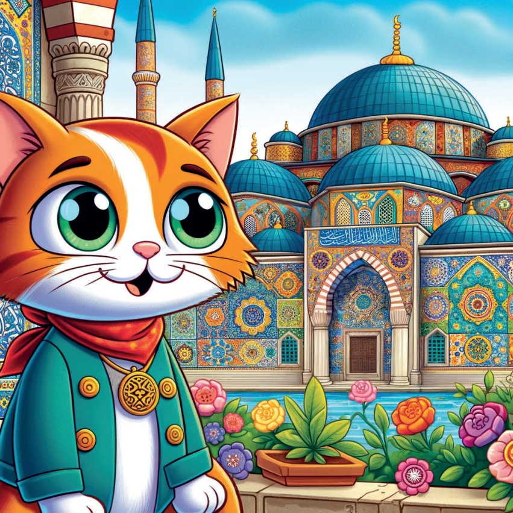
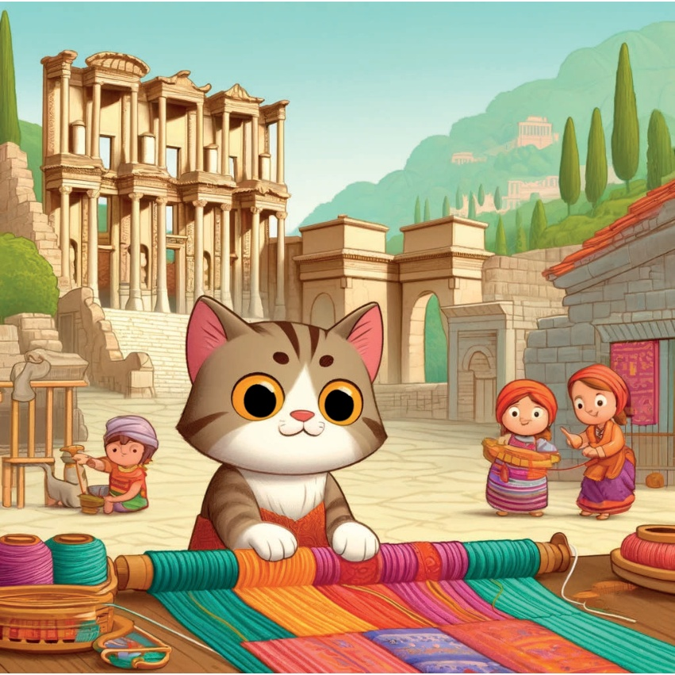
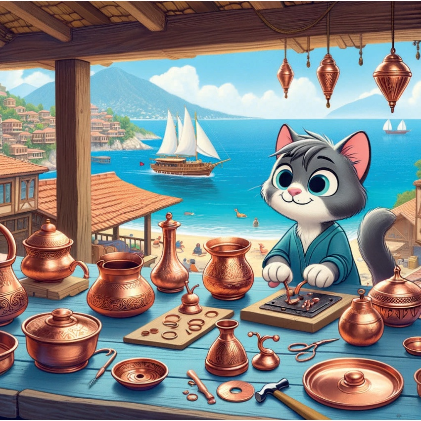
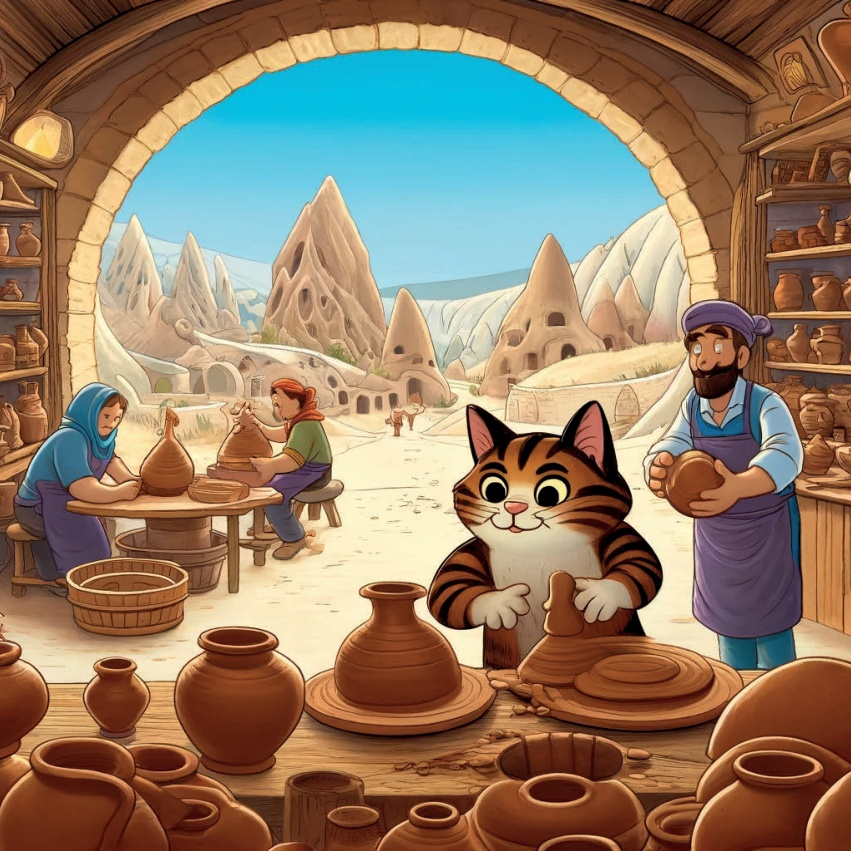
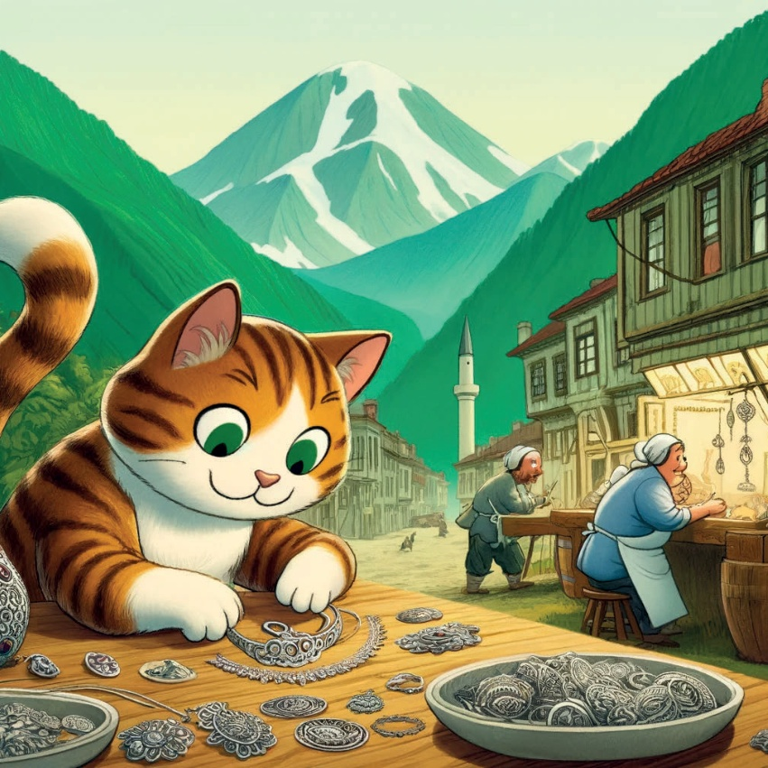
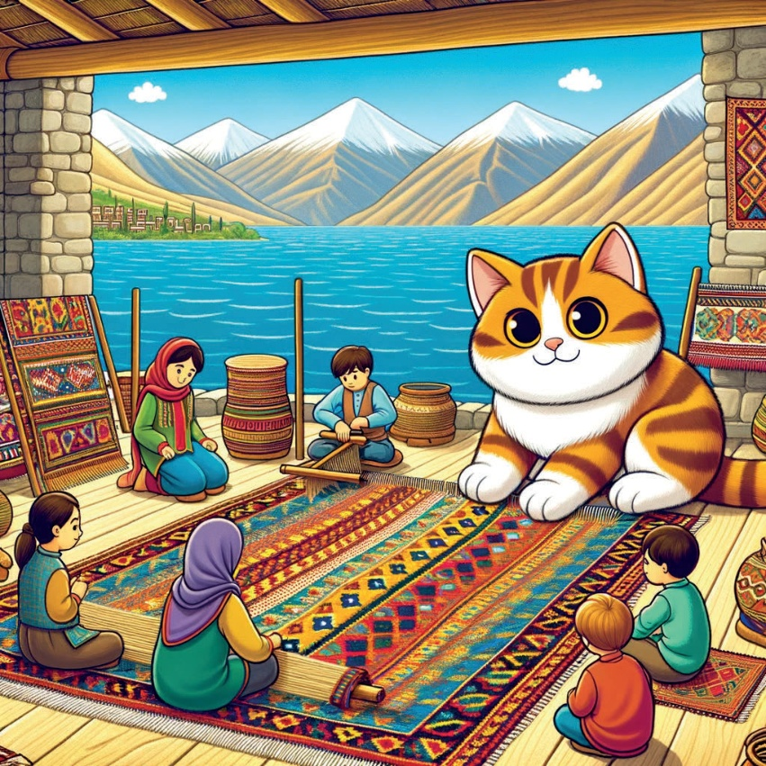
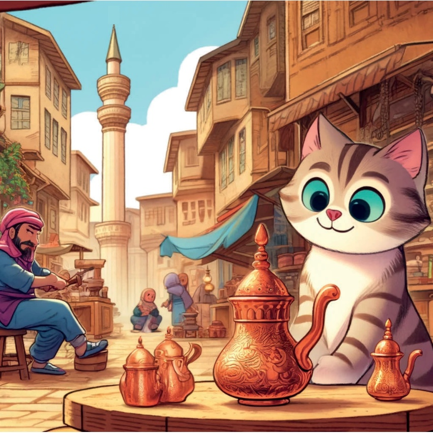

Der var en curios lille kat ved navn Karamel,
der elskede at opdage nye ting.
Karamel tog afsted på en rejse over Tyrkiet
til at udforske den smukke og detaljerede verden
af tyrkiske håndværk.
4
5
Marmar Region - Iznik Fliser
Karamels første stop var i Iznik,
hvor hun opdaged de smukke Iznik fliser.
Disse fliser, med deres lyserøde farver
og indviklede mønstre, har været brugt
til at dekorere moskéer og paladser
i århundreder.
6

7
Aegean Region - Ephesens Rugerier
Next, Karamel rejste til Ephesus,
hvor hun så håndværkere, der lagde
smukke mønstre på dun.
Disse mønstre, lavet af bomuld
og naturlige farver, fortalte
historien om regionens rigeligt
historiske og kulturelle.
8

9
Karamels kunst i Antalya:
Kobberarbejde
I Antalya fund Karamel kunst af kobberarbejdning.
Arbejdstærene smed forsigtigt kobber og forme det til smukke redskaber og dekorative genstande.
10

11
Ildsted i Kappadokki:
Keramik
Hunnet hunte hunnet Karamel besøgte et leremølle.
Hunnen så, hvordan den bløde jord fra området blev formes til smukke kasser og vaser, derefter blev de brændt i kiln til at gøre dem holdbare.
12

13
Mørkets kyst – Trabzon:
Karamel rejste til Trabzon,
hvor hun lærte om den delicate kunst med sølvfiligreen.
Artisenter knækkede og trådrede fine sølvtråde sammen i smukke smykker.
14

15
Væstreanatland – Van:
Karamel opdagte kunstnen af kilimweaving. Disse flade, trukket møbler, lavet af får, havde stærke geometriske mønstre og levende farver.
16

17
Søveste Anatolien - Gaziantep:
Kobber kaffekopper
Karamels sidste stop var Gaziantep,
hvor hun så håndværkere, der lavede
traditionelle kobberkaffe-kopper.
18

19
Med hendes hjerte fuld af admiração for håndværkere og deres smukke skabninger,
Karamel realiserede, at Tyskernes sande
var deres rigtige traditioner og de mennesker, der dem bevarede.
Hun vendte hjem, drømme
om hendes næste eventyr.